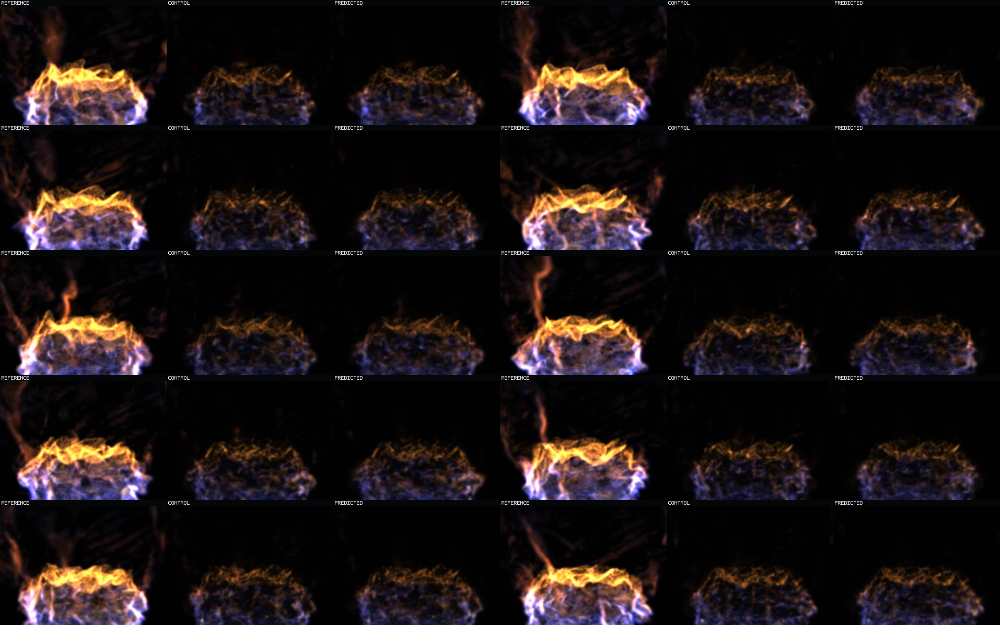
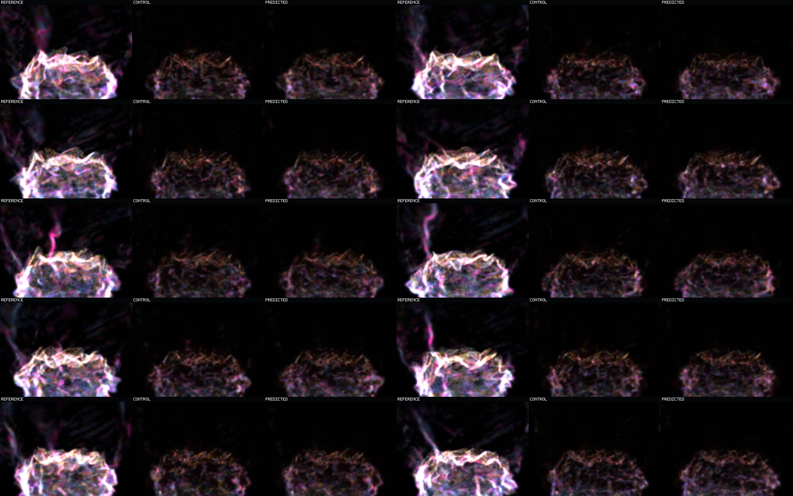

Motion-Balanced Static-Scaffold Successor
Result: the successor preserves substantially more motion-bearing support than the prior frozen model, but it does not learn useful displacement. It performs local occupancy turnover inside the initial mound while the exact target grows, shears, and launches upper flame sheets.
This is one finite, non-looping 10.08-second crosswind holdout: 63 transitions at a controlled 160 ms cadence. It is an isolated splat witness, not an analytical-raymarch image-error comparison.
Exact held-out targetCENTER: CONTROL
Copied current stateRIGHT: PREDICTED
Recurrent learned state
Motion-Bearing Beauty Video
Stable Q1/Q2 opacity is reduced to 0.1. High-change Q3/Q4, transported support, and births remain at full opacity; unmatched/death support remains faint at 0.05. Compare silhouette travel, not merely color. Reference repeatedly raises and sheds tall sheets. Prediction remains a low mound and stays visually close to control.
Beauty Sequence Context
This sheet samples the same video approximately once per second. Read each reference/control/predicted triptych left-to-right, then move top-left to bottom-right. The visible improvement over the prior model is denser retained microstructure and a preserved basin scaffold. The missing behavior is macroscopic phase travel.

Partial Cohort Debug Video, Gain 0.625
The same states and cadence receive an additive display-only cohort mix. This asks whether transported or high-change support exists but is hidden by beauty appearance. It does not: prediction has more colored motion-bearing support than the predecessor, but that support remains concentrated inside the mound.
Debug Sequence Context
This is the one-second sampling of the debug video. The denser predicted colors explain the aggregate cohort-metric improvement. Their stationary envelope explains why that improvement is not yet motion.

Visible Activity
Mean absolute frame-to-frame luma difference over all 62 adjacent frame pairs. Prediction improves over the prior frozen model at 1.349, but remains below current-state reuse and far below the exact target.
| role | mean YAVG | maximum YAVG |
|---|---|---|
| exact reference | 10.218 | 11.273 |
| copied-current control | 2.827 | 3.860 |
| learned prediction | 2.618 | 4.308 |
Motion Cohort Audit
| cohort | prediction support | control support | prediction energy | control energy | beat-step fraction |
|---|---|---|---|---|---|
| stable-q1 | 0.598 | 0.509 | 0.509 | 0.425 | 0.984 |
| stable-q2 | 0.353 | 0.304 | 0.299 | 0.269 | 0.984 |
| stable-q3 | 0.270 | 0.234 | 0.241 | 0.222 | 0.984 |
| stable-q4 | 0.239 | 0.212 | 0.192 | 0.186 | 0.984 |
| transported target | 0.173 | 0.154 | 0.162 | 0.156 | 1.000 |
| birth | 0.139 | 0.123 | 0.163 | 0.156 | 0.984 |
The strict gate remains negative: Q3, Q4, and birth each lose one transition, so aggregate support cannot close a motion claim.
Mechanism
The crosswind rollout executes only 90 explicit transports, all in the first six steps, while selecting 40,535 births and 34,189 deaths around an average 70,687 copied/static carriers. The 28-way direction head has effectively abstained. Better support comes from scaffold preservation and occupancy replacement, not carrier displacement.
Claim Boundary
This witness diagnoses one frozen model on one exact crosswind episode. It does not establish analytical-raymarch image error or prove that Eulerian destination-occupancy prediction will work. Full commands, hashes, route receipts, and the next falsifier are in README.md.